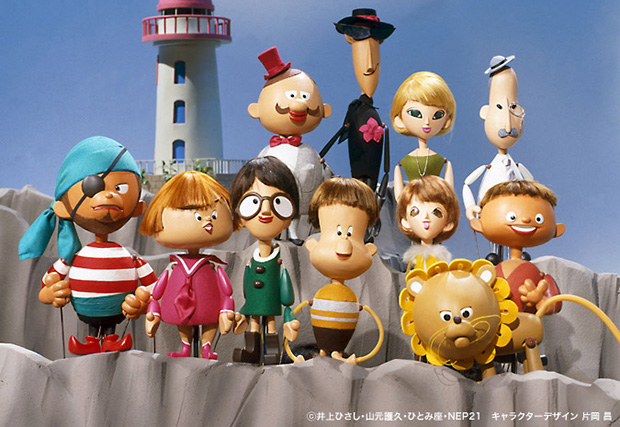
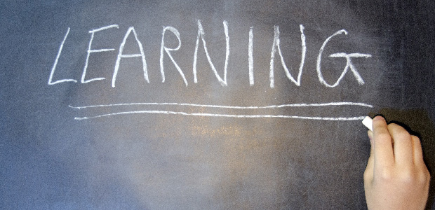

出典：「人形劇団ひとみ座」
ウチの子ほんとに勉強しなくて…。
テストも近いのに寝てばかりで全然勉強しないんですけど、こんなんでいいんでしょうか…。
教育という仕事に携わって30数年、散々親から聞かされてきたことばです。
30年以上に渡って私は、子を持つ親御さんからこのことばを延々と聞かされてきたわけですが、30年といえば世代がひと回りしているはずです。
ということは…
今の親が子どものときも、その親から私は上のようなグチ（？）―失礼、悩み―を聞かされていたことになります。
そしてその親たちもきっと子どもの頃は「勉強しなくて…」と親を嘆かせてきたに違いありません。
まことにいつの時代も―多分近代になって百年以上―親は子どもに「もっと勉強してくれなくては…」と悩み続けてきたのです。
この親子間の長い長い葛藤の歴史(笑)
この問題を考察するだけで日本の近代史の側面が明らかになる(笑)
もちろん私も子ども時代、親から散々「勉強しろ」と言われました。勉強しなさい圧力はむしろ今よりもキツかったかも知れません。
高度成長期の時代です。より高い学歴を身につけることはその後の人生を決定づけるという考えは、今よりも固く信じられていたからです。
ところで、この「勉強をめぐる親子の葛藤」といえば私はいつも思い出すエピソードがあります。
当時NHKで人気を博していた人形劇ドラマ「ひょっこりひょうたん島」です。
この番組を直接知っている人は、かなり年配の人に限られます（年がバレる？）。
井上ひさしの原作で大人も子供も楽しめるものでした。
実は、個人的にも思い入れの多い番組で、当時私の母親は勉強に差し支えるという理由で私にテレビを見るのを禁じていたのですが、この番組だけは例外でした。
ストーリーは省きますが（興味のある方は検索してみてください）、人形劇でありながらミュージカル仕立てで劇中よく登場人物が歌うシーンがあるのです。
私が印象に残っているのは、ある歌のシーン。子どもたちと女教師であるサンデー先生が以下のように歌うところです。
子どもたち：
勉強なんかいい、勉強なんかいい！
大人は子どもに命令するよ。勉強～勉強～。偉くなるために、お金持ちになるために…
あ～あ～、あ～あ～、そんなの聞き飽きた！
この「勉強なんかいい…」というのは、勉強なんかもうイヤという意味です。
そして最後の「そんなの聞き飽きた！」という部分で子どもたちが一斉に絶叫するのです。
それに対し女教師（サンデー先生）は、こう返します。
サンデー先生：
いいえ、人間になるためよ～ 男らしい男。女らしい女。人間らしい人間。
そうよ、人間になるため～よ。
勉強なさい！
とこれまた最後は、叩きつけるようにピシャっと声を張り上げます。
さらに、子どもたちは「勉強なんかいい～」とまた同じフレーズを繰り返し、さらにサンデー先生が…と延々と続くのです
この番組を見ていたのは私が小学生のときでしたが、この歌詞もメロディーもこうしてスラスラ出てくるくらい耳に残っています。
勉強の目的は人間になるため

さて、ここで何が言いたいのかというと、私はこのサンデー先生のお説教は今考えると「的を射た言葉」だと思うのです。
子どもたちは言います。
「大人は子どもに勉強しろと命令する。偉くなるため、お金持ちになるために…」
すなわち勉強の目的は、実利的なものだと言っているわけです。学歴を得て将来の人生を有利にする手段に過ぎない。そんな勉強はイヤだと反発する。
それに対しサンデー先生は「いいえ、人間になるためよ！」と子どもたちを諭すわけです。
勉強は決して有利な人生を手に入れるためではない。そういう功利的なものではなくもっと崇高なもの、すなわち「男として女としてより善き人間になる」ためだと。
そうなのです。勉強の目的とは人間になるためだったのです。
非常にシンプルな答えですね。
子どもたちは長い間、何のために勉強するのか明確な答えを得られないで来ました。
目先のテストのため、良い学校へ行くため、将来困らないためというのは、真の目的ではなく幸せに至る1つの手段に過ぎません。
勉強すること自体の目的を見失っていたわけです。
私も先日、中学生の前で「勉強の意義と目的」について語ったばかりです。
（⇒今どきの中学生に勉強の意義をマジメに語る【前編】）
そこで、視野を広げるとか自由になるためとか、ダマされないため等色々話したけれど一言でいえば「人間になるため」ということになります。
親はどうしても「実利」を求めてしまいます。そして目先の「利益」に訴えがちです。
「テスト近いんでしょ。ちゃんとやりなさいよ」
「塾の宿題終わったの？」
「単語しっかり覚えた？」
「そんなんで○○校受かると思ってるの。ちゃんとやらないと後々困るんだよ」
等々…。
しかし人間は現実的利益だけで動くものではありません。その行動はそもそもどんな目的と結びついているのか。
つまり大きな目的（そもそもなぜ～するのか）が明確になると、各々の行動に意義を感じ意欲も高まるのです。モチベーションですね。
親の皆さんも一度はお子さんに「勉強の目的」を抽象的でよいので、ぜひ話してみてください。大きな話を。（私のこの3回の記事も参考になるかも知れません）
うまい言葉が見つからなくても大丈夫です。照れずに語ってください。
自分なりの表現で十分です。
案外サンデー先生の「人間になるため」が子どもの心に一番響くかも知れませんね。
※このブログを書いた後、「ひょうたん島」を検索したところ何とあの歌があるがありませんか！！なつかしさの余り50年ぶりに聞いてしまいました(笑)
興味のある方はぜひ聞いてみてください。